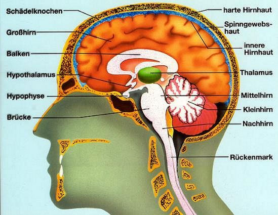
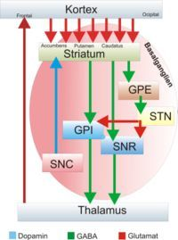
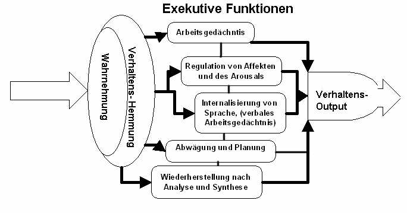

Was ist ADS / ADHS ??
Ich weiß nicht, wer ich bin. Ich komme nirgendwo zurecht.
Ich ecke überall an. Immer bin "ich" schuld, weiß aber gar nicht warum.
Die Aufmerksamkeitsdefizit-/Hyperaktivitätsstörung (ADS) (ADHS), das H steht für das Hyperaktiv) ist eine bereits im Kindesalter beginnende Störung, (keine Persönlichkeitsstörung) die primär durch starke Ablenkbarkeit und geringes Durchhaltevermögen an begonnen Dingen (sofern sie nicht das Interesse des Betroffenen haben), sowie eine Impulskontrollstörung (bei Hyperaktivität) gekennzeichnet ist. ADS tritt sehr häufig in Kombination mit der (H) Hyperaktivität (ist ein von Betroffenenschwer kontrollierbares, überaktives Verhalten. Ausgehend von innerer Ruhelosigkeit, manifestiert sie sich in der Regel in Form von motorischer Unruhe und gesteigertem Tatendrang. Der Betroffene muss ständig etwas tun. Anders gesagt "er dreht den ganzen Tag wie ein Brummkreisel und kommt kaum oder nicht zur Ruhe") auf.
In der Regel tritt das ADS gehäuft bei Frauen und das ADHS bei Männern auf. Dies mag an dem erhötem Testosteronwert der Männer gegenüber den Frauen liegen. Die Ursachen sind bis heute noch nicht, bzw. nur Teilweise geklärt.
Untersuchungen ergaben das ca. 4% aller Kinder unter die Diagnose ADS oder ADHS fallen. Jungen (das liegt an der Verhaltensauffälligkeit durch die Hyperaktivität) werden dreimal häufiger diagnostiziert als Mädchen.
Faktum ist das für ADS wie auch ADHS eine biochemische Störung des Hirnstoffwechsels die Grundlage ist.
Fachleute gehen davon aus das ADS / ADHS hauptsächlich ein genetisch bedingtes Störungsbild ist, welches auf neurobiochemischer Ebene unter anderem mit einer striatofrontalen Dysfunktion erklärt wird. Für den Verlauf und die Ausprägung des ADS / ADHS spielen allerdings auch psychosoziale Faktoren eine wichtige Rolle.
Wie auch in der Borderlinestörung ist das Spektrum, d.h. die Ausprägung des ADS / ADHS sehr unterschiedlich. Nicht alle Symptome sind bei jedem ADS- / ADHS-ler gleichermaßen vorhanden.
Etwas sehr wichtiges muss hier vorab gesagt werden. Die Symptome einer ADHS und einer Borderlinestörung können sich (was sehr häufig der Fall ist) bis zu 20% überschneiden. Aus diesem Grunde glauben ADHS-ler sehr häufig an der Borderlinestörung zu leiden. Diese Selbstdiagnosen mögen noch gehen und richten in der Regel auch keinen Schaden an. Ein wesentlich größerer Schaden entsteht dadurch das sehr viele ADHS-ler als Borderliner diagnostiziert wurden und immer noch werden.
Die ADHS Diagnose ist weit aus schwieriger und wesentlich umfangreicher als die Diagnose der Borderlinestörung und die ist schon schwierig genug.
Die Fehldiagnosen und dem zufolge die Fehlbehandlungen haben schwerwiegende Folgen für die Betroffenen und enden nicht selten im Suizid. Die Anzahl der Suizidversuche unter ADHS-lern ist enorm hoch.
Dazu ein kurzer Abriss zur Entwicklung in Deutschland.
Bekannt ist das ADS / ADHS schon sehr lange. Erstmals wurde es fachlich 1902 von G. F. Still beschrieben.
Dieser dokumentierte in seinen Praxisnotizen das auffällig trotzige, aufbrausende, unaufmerksame sowie überaktive Verhalten einer Reihe von Kindern. Der Autor führte das Betragen jener Kinder auf einen sog. „defect in moral control“ zurück. Seiner Meinung nach handelte es sich dabei um ein erworbenes Störungsbild mit oftmals chronischem Verlauf.
In den 40er und 50er Jahren wurde der Begriff der „minimal brain dysfunction“ (minimale cerebrale Dysfunktion, MCD) eingeführt, dessen Konzept in erster Linie von organischen Hirnschäden als Ursache für oben beschriebene Symptome ausging.
Von dem MCD-Modell wurde zunehmend Abstand genommen, da es z.B. auch Lern- oder Sprechstörungen miteinschloss und sich im Rahmen der diagnostischen Einordnung als zu unspezifisch erwies.
Anstelle dessen beschrieben spätere Arbeiten von Marwitt (1972) und Safer (1976) ein sog. „Hyperkinetisches Syndrom“, das Symptome wie Aufmerksamkeitsdefizit, Hyperaktivität und mangelnde Impulskontrolle umfasst. Vor allem Forschungsergebnisse von Douglas u. Peters (1979) stellten das Kriterium „Unaufmerksamkeit“ als möglichen Schwerpunkt des Störungsbildes heraus, was 1980 zur Aufnahme des Begriffes „Attention-Deficit Disorder (ADD)“ in die DSM-III führte. In der revidierten Fassung der DSM-III-R 1987 wurde das Krankheitskonzept des ADD um das Kriterium „Hyperaktivität“ erweitert und als „Attention-Deficit Hyperactivity Disorder (ADHD/ADHS)“ definiert.
Der Frankfurt Psychiater Dr. Heinrich Hoffmann (* 13. Juni 1809 in Frankfurt am Main; † 20. September 1894 in Frankfurt am Main) ist der Verfasser des Struwwelpeters. Ab 1851 war er unter anderem Direktor der städtischen Nervenheilanstalt ("Anstalt für Irre und Epileptische") in Frankfurt am Main. Er gilt als erster Vertreter der Jugendpsychiatrie.
Wer kennt ihn nicht den Stuwwelpeter? Hoffman beschrieb in seinem ein Kind mit dem Namen Zappelphilipp. Ob Hoffman, auf Grundlage seiner Tätigkeit als Psychiater und Direktor der damaligen Psychiatrie, definitiv psychische Störungsbilder, für einer sogar für Kinder verständlichen Sprache beschrieb und es vielleicht später als Hilfe ansah, wissen wir nicht.
Die Entstehung des Buches beruhte nicht auf der Niederlegung von Störungsbildern sondern auf einem nicht gefundenem Weihnachtsgeschenk für seinen Sohn.
Hoffmann kam schließlich mit einem leeren Schreibheft zurück und beschloss, selbst für seinen Sohn ein Bilderbuch zu schreiben bzw. zu zeichnen. Das Geschenk hatte die erhoffte Wirkung und erzielte schließlich in Hoffmanns Bekanntenkreis großes Aufsehen:
Fakt ist das Hoffman sehr genau 4 Störungsbilder in seinem Buch beschrieb.
Offiziell bekannt ist das ADS / ADHS bzw. die Symptomatik in Deutschland seit Mitte der 80iger Jahre. Die Vereinigten Staaten sind uns da mal wieder weit voraus, denn dort ist die Symptomatik seit 1949 bekannt und wird seit 1949 in den Staaten mit Ritalin behandelt.
Erst am 27.12.2002 einigte sich das Ministerim für Gesundheit auf die offizielle Diagnose ADS / ADHS in Deutschland und deren Behandlung, auch für Erwachsenen. (Das PDF-Dokument können Sie hier abrufen)
Wie anfangs in der Borderlinestörung gibt es bis heute nur sehr wenige Spezialisten die ADS / ADHS für Erwachsenen einwandfrei diagnostizieren können. Das hat und hatte wie bereits oben erwähnt oft eine Falschdiagnose (Borderlinepersönlichkeit) zur Folge, zumal bei 60% aller Borderlinepersönlichkeiten mit Hilfe der Uthascales im Kindesalter eine ADHS nachgewiesen werden konnte und wie bereits erwähnt sich Symptome bis zu 20% überschneiden können.
In Deutschland werden Erwachsene leider erst seit 2003 diagnostiziert (wenn die Diagnose nicht bereits im Kindesalter gestellt wurde). Der Leidensweg dieser Betroffenen war, hier haben die Borderlinepersönlichkeiten deutlich Vorteile, und ist leider immer noch enorm. Ohne weiteres ist Deutschland auf dem Gebiet des AD(H)S bei Erwachsenen ein Entwicklungsland.
Die Fakten:
Sehr oft tritt das ADS oder ADHS in Form von komorbiden Störungen auf. Das heisst, das weitere (wenigstens eine) Störung neben dem ADS bzw. ADHS existieren. Es gibt kontroverse Meinungen zur Komorbidität der AD(H)S mit der Borderlinestörung. Einige behaupten das bei Nichtbehandlung des AD(H)S sich eine Borderlinestörung entwickeln kann.
Ich persönlich bin der Meinung, dass dies der grösste Blödsinn ist, den man schreiben oder publizieren kann. Allenfalls bilden sich starke, und die sind meistens sowieso vorhanden, Borderlinestrukturen heraus (siehe hierzu Symptome), welches allerdings noch lange
keine Diagnose einer komorbiden Borderlinestörung, oder gar die aleinige Diagnose einer Borderlinestörung rechtfertigen.
|
Dazu ein kurzer Abriss
| ADS / ADHS | Borderline-Persönlichkeitsstörung | |
| nein | ICH-Fragmntierung ? | ja |
| nein | Spaltung? | ja |
| nein | niedere Abwehrmechanismen | ja |
| ja | Liebe (wie definiert) | nein |
| nein | kurzer Wechsel von Idealisierung & Abwertung | ja |
| nein | frei flottierende Angst | ja |
| nein | tragen von Masken | ja |
| nein | Lügen als Überlebensstrategie | ja |
| nein | grenzenloser pathologischer Hass | ja |
| nein | innere Leere / sich nicht spüren | ja |
| nein | bewusstes Selbstverletzendes Verhalten | ja |
| nein | Selbstabwertung | ja |
| nein | Opferrolle um geliebt zu werden | ja |
| ja | steht zu Gesagtem | nein |
| nein | Partner ist prä-ödipale Mutter? | ja |
| nein | Beziehung wird wechselnd abgewertet & idealisiert | ja |
| nein | Beziehung wird nach Beendigung völlig abgewertet | ja / seltener nein |
Die Tabelle wäre um ein vielfaches fortzusetzen, doch glaube ich das reicht um klar darzulegen das eine komorbide Exestenz der Borderlinestörung bei einem AD(H)S - ler nicht möglich ist. Die Tabelle erhebt nicht den Anspruch der Vollständigkeit und sagt auch nicht aus das Aufgeführtes zu je 100% bei beiden Klassifikationen zutrifft.
Das AD/HS weist eine hohe genetische Prädisposition auf, wobei Zusammenhänge mit Veränderungen der Noradrenalin- und Dopamintransporter-und -rezeptorgene diskutiert werden. ADHS wird nach der aktuellen Literatur nicht durch ein einziges Gen, sondern wahrscheinlich durch etwa 50 verschiedene Gene codiert, dabei handelt es sich nach der gegenwärtigen Literatur um solche die Enzyme, die den Neurotransmitterstoffwechsel, die Neurotransmittertransporter und Neurotransmitterrezeptoren codieren. Enstprechend vielfältig sind die Symptome und die begleitenden anderen psychischen Störungen. Umgekehrt bedeutet dies auch, dass die Erkrankung nicht notwendigerweise wie bei einem dominanten Erbgang von den Eltern auf die Kinder weitergegeben wird. Rauchen der Mütter in der Schwangerschaft und Frühgeburtlichkeit scheint ebenfalls eine ursächliche Rolle zu spielen. (möglicherweise eine der Erklärungen für eine Zunahme der Häufigkeit Niedriges Geburtsgewicht und vorzeitige Geburt (Frühgeborene) vergrößert das Risiko. Kinder die in oder vor der 34. Woche geboren werden haben ein fast 3-fach erhöhtes Risiko, Kinder die zum errechneten Geburtszeitpunkt geboren werden aber ein Geburtsgewicht von zwischen 1500 und 2499 Gramm haben haben ein um 90% erhöhtes Risiko, Kinder mit einem Geburtsgewicht von zwischen 2500 und 2999 noch ein 50% erhöhtes Risiko, verglichen mit Kindern von 3kg und mehr.
Trotz genetischer Einflüsse scheint auch das Erziehungsverhalten eine Rolle zu spielen. Negativ wirken sich das Erziehungsverhalten insbesondere raue Bestrafungen durch die Mutter, nicht durchschaubare Bestrafung von Regelverletzungen durch die Mutter, geringer Ausdruck von mütterlicher Zuwendung, wenig mütterliche Erwartungen an und Förderung der Bildung des Nachwuchses, geringe Zeit die die Mütter ihren Kindern widmen, Schuldgefühle als wesentliches mütterliches Erziehungsmittel um das Verhalten des Kindes zu kontrollieren, geringe Aufsicht des Vaters und der Mutter, schlechte Kommunikation der Mutter oder des Vaters mit dem Kind aus. Auch hoher Fernsehkonsum bei Kleinkindern erhöht das Risiko Unter Berücksichtigung des unaufmerksamen Typus des ADS, der etwa doppelt so häufig wie der klassische hyperkinetische Typ ist, sind bis zu 10% der Schulkinder therapiebedürftig. Etwa 80% der Betroffenen mit therapierelevanten Symptomen sprechend auf eine Stimulanzientherapie an. AD(H)S führt nicht nur (aber auch nicht immer) zu schlechten Schulleistungen, Konflikte in den Familien, eine erhöhte Rate von Unfällen jeder Art mit schwereren Verletzungen, die spätere Entwicklung von Persönlichkeitsstörungen (wird diskutiert) und Süchten führen zu vielen erheblichen Spätfolgen.
Neuropsychologisch gesehen handelt es sich bei ADS und ADHS überwiegend um eine Störung der exekutiven Funktionen, die nach klassischer Vorstellung im vorderen Hirnlappen oder Frontallappen lokalisiert sind. Wesentlicher ist allerdings eine Störung in der Zusammenarbeit verschiedener Hirngebiete, wobei der Frontallappen eine wichtige Rolle spielt. Funktionelle Kernspintomographien zeigen eine Störung von Regelkreisen zwischen dem Frontallappen, den Basalganglien, dem Balken, und dem Kleinhirn.
|
 |
Davon sind insbesondere neuronale Regelkreise betroffen, die für die Regulation bzw. das Zusammenwirken von Motivation, Kognition, Emotion und dem Bewegungsverhalten verantwortlich sind. Da das Frontalhirn und das sogenannte Striatum (ein Teil der Basalganglien) in diesen Regelkreisen eine bedeutende Rolle spielen, spricht man auch von einer Striatofrontalen Dysfunktion. Diese ist zu einem Teil vererbt, eventuell aber auch pränatal (vorgeburtlich), also während der Schwangerschaft erworben. Geschwister haben 3 bis 5 mal so häufig ADHS wie Nicht-Geschwister; die biologischen Eltern von ADHS-Erkrankten sind in etwa 18 Prozent der Fälle ebenfalls betroffen. Die Regelkreise, auf welche sich der Begriff bezieht, haben einen elementaren Stellenwert für die Funktionsweise des frontalen Teils der Hirnrinde (Frontallappen) und somit für die sogenannten Exekutiven Funktionen. Sie sind wesentlich daran beteiligt, auf neuronaler Ebene das Zusammenwirken von Motivation, Emotion, Kognition und dem Bewegungsverhalten zu realisieren. Dysfunktionen (Funktionsstörungen) dieser Regelkreise führen zu einem Über- oder Unterangebot von Neurotransmittern (insbesondere von Dopamin und Noradrenalin) in bestimmten Hirnregionen und auf der Verhaltens- bzw. psychischen Ebene zu Störungen des Zusammenwirkens der genannten Funktionsbereiche. |
|

|
Vereinfachtes Schema der Basalganglien - mit Glutamat (rot), Dopamin-(blau) und GABA (grün) Abkürzungen
|
|  |
Gemeint ist damit eine Störung des
|
Wesentlich für die Funktion des exekutiven Systems ist dabei, dass zunächst die quasi instinkthafte gefühlsmäßige Verhaltensantwort im Sinne eines automatischen Reflexes auf eine gefühlsmäßige Wahrnehmung gehemmt wird. Diese Hemmung des direkten Anwortverhaltens verhindert, dass nicht relevante Ablenkungen unser Verhalten bestimmen. Hierdurch wird es auch möglich, trotz Pausen den Faden wieder aufzunehmen ohne den Fokus unserer Aufmerksamkeit zu verlieren. Diese Hemmung des direkten Anwortverhaltens bedeutet, dass wir uns sagen könne: Halt inne, seh hin, hör zu, überlege bevor du handelst. Hierdurch wird zielgerichtetes Lernen und Handeln möglich. Es handelt sich bei ADS und ADHS damit nicht nur um eine Störung der Aufmerksamkeit sondern um eine Störung in der Verarbeitung des Wahrgenommenen die zu fehlerhaftem Verhalten oder zu Fehlverhalten führt.
Diagnose
Als Voraussetzung für die Diagnose ADHS müssen die Symptome mindestens seit sechs Monaten vorliegen und erstmals schon vor dem siebten Lebensjahr aufgetreten sein. Nach Krause ("ADHS im Erwachsenenalter", 2005) kann sich ADS allerdings bei Frauen auch erst in der Pubertät zeigen. Auf jeden Fall müssen die Symptome deutliche Beeinträchtigungen für das tägliche Leben der betroffenen Person mit sich bringen. Ein Ausschluss von möglichen anderen Störungen, welche die hyperkinetischen Symptome besser erklären würden, ist dabei unerlässlich. Es darf zum Beispiel keine tiefgreifende Entwicklungsstörung, keine Schizophrenie oder keine andere psychotische Störung vorliegen.
| F90 | Hyperkinetische Störungen | ||
| Diese Gruppe von Störungen ist charakterisiert durch einen frühen Beginn, meist in den ersten fünf Lebensjahren, einen Mangel an Ausdauer bei Beschäftigungen, die kognitiven Einsatz verlangen, und eine Tendenz, von einer Tätigkeit zu einer anderen zu wechseln, ohne etwas zu Ende zu bringen; hinzu kommt eine desorganisierte, mangelhaft regulierte und überschießende Aktivität. Verschiedene andere Auffälligkeiten können zusätzlich vorliegen. Hyperkinetische Kinder sind oft achtlos und impulsiv, neigen zu Unfällen und werden oft bestraft, weil sie eher aus Unachtsamkeit als vorsätzlich Regeln verletzen. Ihre Beziehung zu Erwachsenen ist oft von einer Distanzstörung und einem Mangel an normaler Vorsicht und Zurückhaltung geprägt. Bei anderen Kindern sind sie unbeliebt und können isoliert sein. Beeinträchtigung kognitiver Funktionen ist häufig, spezifische Verzögerungen der motorischen und sprachlichen Entwicklung kommen überproportional oft vor. Sekundäre Komplikationen sind dissoziales Verhalten und niedriges Selbstwertgefühl. | |||
| Exkl.: | Affektive Störungen
Angststörungen Schizophrenie Tiefgreifende Entwicklungsstörungen |
||
| F90.0 | Einfache Aktivitäts- und Aufmerksamkeitsstörung | ||
|
Aufmerksamkeitsdefizit bei: |
|||
| Exkl.: | Hyperkinetische Störung des
Sozialverhaltens |
||
| F90.1 | Hyperkinetische Störung des Sozialverhaltens | ||
| Hyperkinetische Störung
verbunden mit Störung des Sozialverhaltens |
|||
| F90.8 | Sonstige hyperkinetische Störungen | ||
| F90.9 | Hyperkinetische Störung, nicht näher bezeichnet | ||
| Hyperkinetische Reaktion der
Kindheit oder des Jugendalters o.n.A. Hyperkinetisches Syndrom o.n.A. |
|||
Durch ihre motorische Hyperaktivität fallen die beiden ersten Typen mit Aufmerksamkeitsdefizitstörung eher auf als der nach außen nicht hyperkinetisch wirkende, unaufmerksame Typus. Dieser Typ scheint eher verträumt und ruhig zu sein. Innere Unruhe beziehungsweise gedankliche Umtriebigkeit und Impulsivität können jedoch genauso auftreten wie bei den anderen Typen. Oft kommt es erst relativ spät zu einem scheinbar unerklärlichen Versagen in der Schule oder im Beruf. Es wird vermutet, dass Mädchen in dieser Gruppe stärker vertreten sind als in den beiden anderen und deshalb seltener diagnostiziert werden. Von Frau Dr. Simchen wird der Begriff Hypoaktiv für den unaufmerksamen Typ der ADS benutzt.
A. In Bezug auf Alter und Entwicklungsstand
nachweisbare Abnormität von Aufmerksamkeit und Aktivität zu Hause.
Gekennzeichnet durch mindestens drei dieser
Aufmerksamkeitsschwierigkeiten:
B. In Bezug auf Alter und Entwicklungsstand
nachweisbare Abnormität von Aufmerksamkeit und Aktivität im
Kindergarten oder in der Schule (falls zutreffend). Gekennzeichnet durch
mindestens drei dieser Aufmerksamkeitsschwierigkeiten:
Daneben darf es sich nicht um eine tiefgreifende
Entwicklungsstörung (F84), Manie
(F30), Depression
(F32) oder Angststörung
(F41) handeln, die Symptomatik
sollte vor dem 6. Lebensjahr beginnen und mindestens 6 Monate andauern
und der IQ muss einen Wert von 50 überschreiten.
Das Diagnostische Manual DSM-IV unterteilt in drei ADS-Erscheinungsbilder:
Durch ihre motorische Hyperaktivität fallen die beiden ersten Typen mit Aufmerksamkeitsdefizitstörung eher auf als der nach außen nicht hyperkinetisch wirkende, unaufmerksame Typus. Dieser Typ scheint eher verträumt und ruhig zu sein. Innere Unruhe beziehungsweise gedankliche Umtriebigkeit und Impulsivität können jedoch genauso auftreten wie bei den anderen Typen. Oft kommt es erst relativ spät zu einem scheinbar unerklärlichen Versagen in der Schule oder im Beruf. Es wird vermutet, dass Mädchen in dieser Gruppe stärker vertreten sind als in den beiden anderen und deshalb seltener diagnostiziert werden. Von Frau Dr. Simchen wird der Begriff Hypoaktiv für den unaufmerksamen Typ der ADS benutzt.
A1 Unaufmerksamkeit
Sechs (oder mehr) der folgenden Symptome von Unaufmerksamkeit sind während
der letzten sechs Monate in einem mit dem Entwicklungsstand des Kindes
nicht zu vereinbarenden und unangemessen Ausmaß vorhanden gewesen:
A2 Hyperaktivität und Impulsivität
Sechs (oder mehr) der folgenden Symptome der Hyperaktivität und
Impulsivität sind während der letzten sechs Monate beständig in einem mit
dem Entwicklungsstand des Kindes nicht zu vereinbarenden und
unangemessenen Ausmaß vorhanden gewesen:
Hyperaktivität
Impulsivität
B
Einige Symptome der Hyperaktivität-Impulsivität oder Unaufmerksamkeit,
die Beeinträchtigungen verursachen, treten bereits vor dem Alter von
sieben Jahren auf
C
Beeinträchtigungen durch diese Symptome zeigen sich in zwei oder mehr
Bereichen (z.B. in der Schule bzw. am Arbeitsplatz und zu Hause)
D
Es müssen deutliche Hinweise auf klinisch bedeutsame Beeinträchtigungen
in sozialen, schulischen oder beruflichen Funktionsbereichen vorhanden
sein
E
Die Symptome treten nicht ausschließlich im Verlauf einer sog.
tief greifenden Entwicklungsstörung, einer Schizophrenie oder einer anderen
psychotischen Störung auf und können auch nicht durch eine andere
psychische Störung besser erklärt werden (z.B. Affektive Störung,
Angststörung, Dissoziative Störung oder eine Persönlichkeitsstörung)
Subtypen:
Das Alterskriterium wird durch neuere Studien in Frage gestellt
Wie oben ersichtlich ist, verlangt das DSM IV, dass die Symptome bereits vor dem 7. Lebensjahr auftreten, damit die Diagnose gestellt werden kann.
Dies verlangen im übrigen auch die deutsche Leitlinien (Krankenkassen).
Diese Einteilung wird mittlerweile häufig angezweifelt. Neuere Studien weisen darauf hin, dass ADHS auch bei Jugendlichen nach dem 13. Lebensjahr beginnen kann. Die Symptome, Beeinträchtigung und Komplikationen unterscheiden sich bei späterem Auftreten nicht von denen die bei dem in den diagnostischen Kriterien geforderten frühen Auftreten vorhanden sind. Vermutlich wird deshalb das Alterskriterium in zukünftigen Klassifikationen geändert werden. Zu berücksichtigen ist, dass die diagnostischen Kriterien einem Alles oder Nichts Prinzip folgen, das nicht immer gerechtfertigt ist. Man muss davon ausgehen, dass es viele Menschen gibt, bei denen leichte Anzeichen von ADS oder ADHS vorhanden sind, die aber mit der Intensität ihrer Symptome noch unterhalb der Schwelle liegen, bei der eine Diagnose gestellt werden kann. Bei diesen Menschen können Lebensumstände dazu führen, dass die diagnostische Schwelle überschritten wird.
ADHS muss
derzeit
definitionsgemäß
vor dem 7.
Lebensjahr
vorhanden
gewesen sein.
Die Diagnose
schließt immer
eine Familien-,
Eigen- und wenn
möglich eine
Fremdanamnese
unter
Einbeziehung
von Arzt-,
Kindergarten-,
Schulberichten
unter
Verwendung von
Fragebogen,
Rating Scales,
Zeugnissen u.
a. ein.
Um das Syndrom
zu
diagnostizieren
sollte es zu
deutlichen und
klinisch
relevanten
Beeinträchtigungen
in
verschiedenen
Lebensbereichen
führen.
ADHS Diffenzialdiagnosen und Komorbidität
© "Team der Borderlinezone" 2007